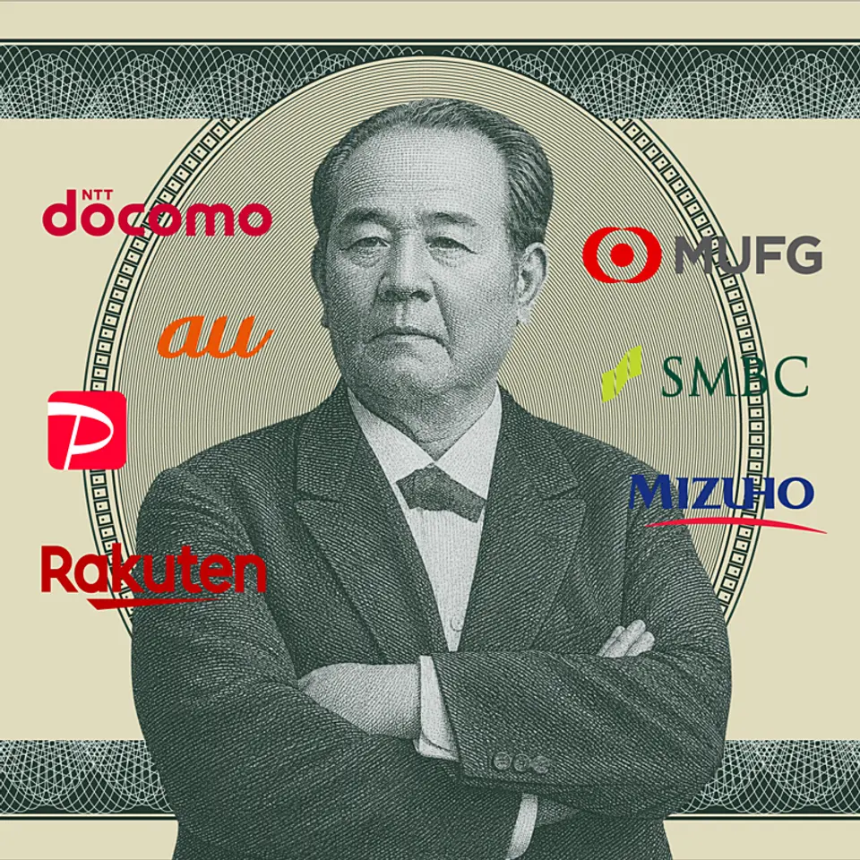
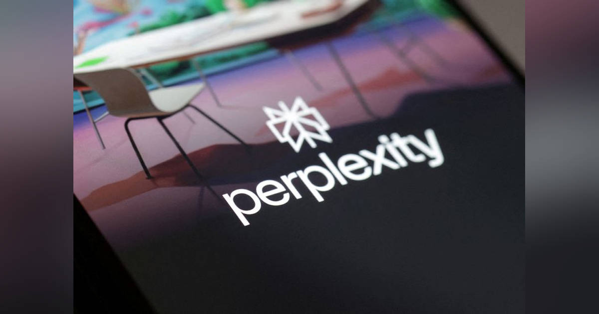
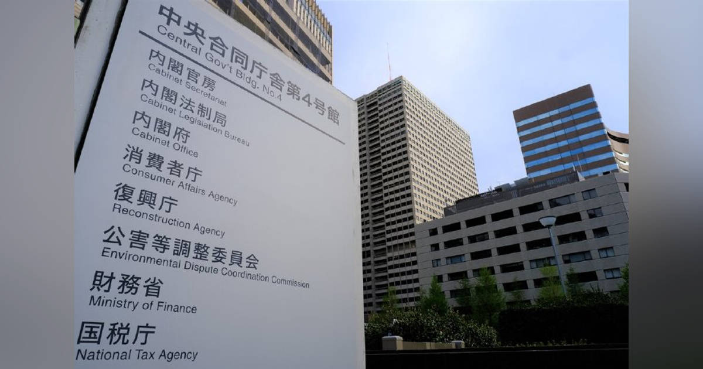
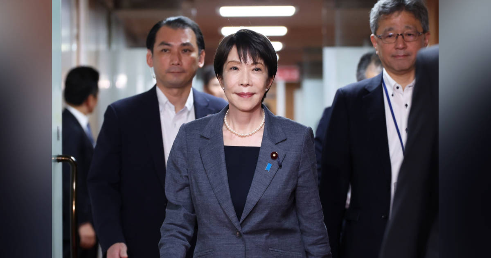
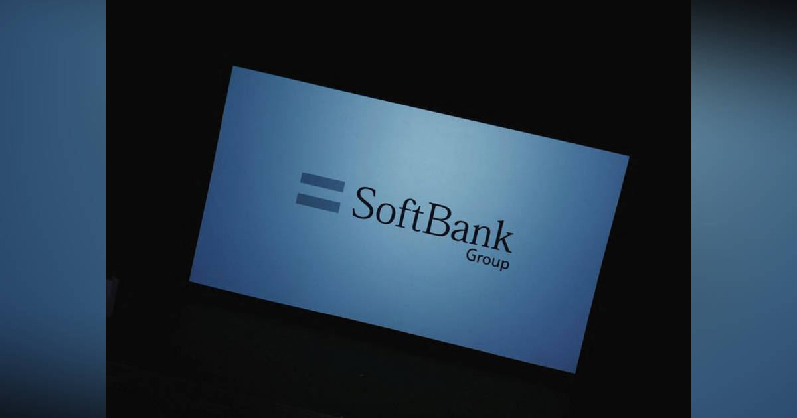

01
【図解】ドコモ「銀行参入」でおサイフ争奪戦が始まった
発行日時：2026年8月24日 05:30 JST ・ NewsPicks編集部

あなたに関係ありそうな理由
通信、決済、銀行、証券が一体化すると、日常の支払いと資産管理の選択肢・比較の仕方が変わるためです。
概要
NTTドコモが、通信会社の枠を超えて個人のお金の入口を取りにいく構図を描いた記事です。2026年7月に銀行、証券、カードなどを束ねるNTTドコモ・フィナンシャルグループが始動し、8月には住信SBIネット銀行が「ドコモSMTBネット銀行」へ商号変更、個人向けの「ドコモの銀行」も始まりました。見た目や新しい支店名が話題になった一方、記事が重視するのは、約1億900万人のdポイント会員、d払い、dカード、915万口座の銀行、300万口座のマネックス証券をつなぐ基盤です。給与受取や口座振替でポイントがたまり、dアカウント、決済、カードと連動する設計は、顧客接点を金融へ広げるためのものです。背景には、携帯回線だけでは伸びにくい市場と、金利のある環境で預金・融資・運用の収益機会が戻ったことがあります。ドコモは2025年度5965億円だった金融事業収益を2030年度に1.2兆円へ倍増させる計画を掲げます。オンライン銀行でありながら、ドコモショップと銀行代理店を合わせてまず270店以上、将来は1500店超へ広げ、住宅ローンなど複雑な相談も担う構想です。旧・住信SBIネット銀行は住宅ローンの取扱いを代理店経由でも築いてきたため、記事は「デジタルだけではない」ことを強みとして取り上げます。ドコモは2025年に4200億円を投じて銀行を傘下に入れ、通信の顧客基盤と対面拠点を組み合わせる選択をしました。記事では、KDDIが銀行と暗号資産、PayPayが保険へと金融の部品を広げる動きも紹介され、通信会社同士の競争だけではない再編として位置づけられます。ただし、店舗で金融商品を扱うには資格、コンプライアンス、人材育成が欠かせません。表示コメントでも、通信の顧客基盤を金融の収益柱にする狙いは理解できる一方、サービスが複雑になり顧客本位を欠く懸念、代理店側が教育投資を回収できる設計が必要だという論点が出ました。競争が強まるほど、囲い込みの強さだけでなく、利用者が他社サービスと比較・乗り換えできるかも重要です。選択肢が増えても、比較の手間が増えれば利便性とは言えません。料金、金利、ポイント条件、個人データの扱いを比較できるかが勝負になります。
仕事や会話で使える一言
金融の競争は商品数より、「顧客が比較し続けられる設計」をつくれるかで決まる。
NewsPicks原文を読む
02
エヌビディア、パープレキシティ出資協議 評価額300億ドル超＝報道
発行日時：2026年8月24日 13:28 JST ・ Reuters

あなたに関係ありそうな理由
生成AIの事業化では、利用者数だけでなく、計算資源の費用と資金調達が一つの循環をつくり始めているためです。
概要
米半導体大手エヌビディアが、AI新興企業パープレキシティへの出資を協議していると報じた記事です。資金調達ラウンドで想定される企業価値は300億ドル超で、1年前の前回調達時より50％超の上昇になる見通しとされます。パープレキシティの年換算売上高は、2026年初めの2億5000万ドル未満から7億5000万ドル超へ増えたといい、専門職向けにパソコン上の業務を自動化するクラウド型AIエージェント「Perplexity Computer」などが伸びを支えたと伝えます。同社は報道へのコメントを控え、エヌビディアも取材時点では直ちに回答していません。記事は、AIサービスの成長がモデルの性能だけで決まらないことも映します。ブルームバーグ報道によれば、パープレキシティはマイクロソフトのAzure利用のため7億5000万ドルの契約を結んでおり、検索や業務自動化を広げるほどクラウドとGPUの利用も増える関係にあります。記事は、昨年9月に同社が企業価値200億ドルの資金調達で投資家から2億ドルの出資確約を得たとの先行報道にも触れます。エヌビディア、ジェフ・ベゾス氏、ソフトバンクグループなどが投資家として名を連ねる状況で、出資とインフラ需要が近づいている点が焦点です。検索から業務自動化へ用途を広げるほど、顧客への価値だけでなく一人当たりの計算資源も増える可能性があります。記事が示す売上高は年換算の規模であり、利益や資金調達後の条件までを示すものではありません。資金調達の成功は、それ自体が収益化の証明ではありません。利用者や企業の支払い意欲も、成長の質を測る材料になります。表示コメントでは、出資資金がスタートアップを経由してGPU売上に戻る「ベンダーファイナンス」に似た循環になり得る、という見方が出ました。一方で、急成長する売上と高い評価額を混同せず、AI企業がクラウド費用を自力でまかなえるかを見るべきだという指摘です。今回の協議が成立するか、出資額や条件がどうなるかは未確定です。注目点は評価額そのものではなく、投資先の成長が実需と収益性を伴うか、そして投資家・クラウド・半導体の利害がどこまで重なるかです。
仕事や会話で使える一言
AI投資は、評価額より先に「計算費用を払っても残る顧客価値」を見たい。
NewsPicks原文を読む
03
消費者庁、「ダークパターン」規制へ 特商法改正視野に中間取りまとめ案
発行日時：2026年8月24日 18:30 JST ・ ITmedia NEWS

あなたに関係ありそうな理由
オンラインで契約・購入する全員が、画面設計による誤認や解約困難の影響を受け得るためです。
概要
消費者庁が、利用者の意思決定をゆがめる表示やUI、いわゆる「ダークパターン」への規律を盛り込んだ中間取りまとめ案を示した記事です。有識者会議「デジタル取引・特定商取引法等検討会」の第8回会合で公表され、特定商取引法の改正も視野に入れます。典型例として挙げられたのは、「お試し」と表示しながら実際には定期購入が条件になっているような手法です。ネット取引では低コストで大量に実行できるため被害が大きくなりやすい一方、現行法では対応し切れない面があると整理しました。提案の特徴は、法律に細かい画面例を固定せず、まず大枠のルールを置き、違反に当たる表示を将来のガイドラインで具体化する考え方です。画面設計は変化が速いため、個別のボタン文言だけを追う制度では追いつかないという問題意識が読み取れます。さらに案は、SNSチャットを使う勧誘や誇大広告にも対象を広げます。SNSチャットによる勧誘の相談は2024年に約9000件と推定され、10年で約20倍に増えたとされます。勧誘目的の事前明示と8日間のクーリングオフを義務付ける案、行政処分を受けた事業者の広告がSNSに残る場合に、消費者庁などがプラットフォームへ削除やアカウント停止を要請できる制度の法定化も含まれます。中間取りまとめ段階なので、いま直ちに新しい罰則が始まるわけではありません。制度化の際には、どの画面や表示が違反かを事業者が予測でき、消費者も申告できる具体性が必要になります。また、誠実に購入を助ける選択肢まで規制するのではなく、誤認や解約妨害をどう切り分けるかも運用上の要点です。施行までには基準の具体化と、利用者・事業者への周知という工程も残ります。特に解約や表示変更を、利用者が迷わず行えるかが問われます。表示コメントでは、偽の緊急性、隠れたコスト、解約しにくい自動更新、偽レビューなどを具体例として確認する声がありました。規制の実効性は、悪質性の判断基準をどこまで明確にし、事業者・プラットフォーム・消費者がそれぞれ何を直すのかを示せるかにかかります。便利な導線と不当な誘導の境目を、事後の苦情だけに任せない制度づくりが始まろうとしています。
仕事や会話で使える一言
コンバージョンを上げる設計と、選ぶ力を奪う設計は同じではない。
NewsPicks原文を読む
04
｢公邸も職場｣､高市首相がSNSで外出控える理由を自己弁護－SP負担軽減
発行日時：2026年8月24日 14:52 JST ・ Bloomberg

あなたに関係ありそうな理由
リーダーの働き方は、勤務時間の長さではなく、意思決定の質と周囲との情報共有で評価されるためです。
概要
高市早苗首相が、公務で外出する必要がない限り公邸にとどまる理由をSNSで説明したことを追う記事です。首相は22日のX投稿で、公邸内での打ち合わせも日々の動静には載らないが「公邸も職場」と実感していると記しました。休日や平日の早朝・夜間に必要でない外出を控えるのは、警護を担うSPの人数と負担を減らすためだと説明しています。2025年10月の首相就任以降、昼夜を問わず働き、公邸で資料を読む習慣で知られ、7月には0〜3時間睡眠が常態化しているとも投稿しました。記事はこの自己説明を、単なる生活習慣ではなく、仕事の進め方と発信方法の問題として置いています。日本経済新聞による土日祝日の分析では、首相就任後の高市氏は半数超を公邸や議員宿舎で終日過ごし、過去3人の首相は3〜16％だったとされます。ブルームバーグの7月までのスケジュール分析では、財務省当局者との面会は前任2人より50％少なく、閣僚会議の開催回数も過去14年間の首相で最少でした。記事は、首相がメディアに直接語る機会が少なく、Xでの発信を好むとも記します。ただ、面会や会議の件数だけで政策の良し悪しや因果を断定する記事ではありません。首相はSNSで有権者へ直接訴える姿勢を持つ一方、記事は合意形成を重視する従来のスタイルとの対照を示します。投稿内容には、公邸に残ることで長時間働けるという説明もありますが、長時間労働そのものを成果の証拠として扱わないことが必要です。民間の組織でも、働きぶりの見え方と実際の判断の質は分けて考える必要があります。異なる働き方を、単なる好悪だけで評価しない視点も必要です。その検証には、政策の結果だけでなく、結果に至る説明責任も含まれます。実務では、その往復の速さも問われます。外出しないこと自体の是非ではなく、資料を読み込む個人作業、官僚や閣僚との調整、メディアを通じた説明がどう組み合わさるかが重要です。表示コメントでも、直接発信を国民との対話と捉える意見と、働く場所より成果・意思決定プロセスを問うべきだという意見が並びました。睡眠時間や滞在場所を成果の代理指標にせず、必要な人と適切に意思疎通できているかを見る必要があります。
仕事や会話で使える一言
長く働くことより、必要な相手と必要な時に話せる設計が、リーダーの仕事を支える。
NewsPicks原文を読む
05
ソフトバンクＧ、1兆円の個人向け社債発行へ 7年債
発行日時：2026年8月24日 09:43 JST ・ Reuters

あなたに関係ありそうな理由
大型の資金調達は、企業の成長投資への姿勢と、個人投資家が負うべきリスクの両方を映すためです。
概要
ソフトバンクグループが、国内の一般募集で主に個人投資家を対象とする1兆円の無担保普通社債を発行すると発表した記事です。償還期限は2033年9月16日の7年債で、利率は年4.3〜4.9％を仮条件とし、9月4日に決める予定です。申し込みは9月7日から16日、払込期日は17日で、野村証券、大和証券、SMBC日興証券など11社が引き受けます。記事が伝える確定事項は、社債の規模、期間、仮条件、募集日程です。利率は確定前であり、募集に応じるかどうかを決める材料は数字だけではありません。無担保であること、満期まで7年という期間、発行企業の財務や投資方針を分けて考える必要があります。個人向け社債は、額面の利回りが見えやすい一方、発行体の信用リスクや途中売却時の価格変動を、預金のように扱ってはいけません。今回の記事は、利率確定後の条件や調達資金の具体的な使途までは伝えていません。そのため、発表時点の仮条件と、将来の資金配分を同じ情報として扱わないことも大切です。記事が予定として示すのは9月4日の利率決定、9月7日から16日の申込、17日の払込であり、実際の募集条件はその公表後に確認する必要があります。同じ年率でも、保有期間、途中売却の可能性、発行企業の状況で受け取る意味は変わり、一律の有利不利は言えません。個人向けだからといって、元本や流動性が自動的に守られるわけではありません。表示コメントでは、足元の国債利回りと比べて上乗せ幅が大きく、個人投資家の関心を集めそうだという意見がありました。同時に、その高い条件は、AIへの積極投資を続ける同社の資金需要やリスクに対する見方とも切り離せない、という論点も示されました。記事から直接いえるのは、ソフトバンクグループが個人市場から大規模・長期の資金を調達しようとしていることです。そこから読み取るべきなのは、利率の魅力だけでなく、募集条件が確定した後に、資金使途、既存債務との関係、返済までの時間軸を自分で確認できるかです。大型調達は企業の期待を映しますが、購入者の安全を保証するものではありません。数字の大きさに圧倒されず、何のリスクの対価なのかを理解する入口にしたいニュースです。
仕事や会話で使える一言
高い利回りを見る前に、「その上乗せは何のリスクの対価か」を確認する。
NewsPicks原文を読む